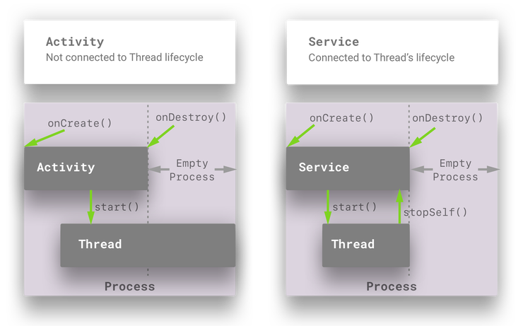

A Service is an Android application component without a UI that runs on the main thread (of the hosting process). If you want the service code to run in a Background Thread, then you must manage that yourself.
There is a subclass of Service that handles it’s own Background Thread called IntentService.
The Service’s onCreate() method is called when it is created (by starting it or binding to it).
stopSelf(). This is a very common pattern in Service implementations.The Service doesn’t know what is going on in the code running in your Thread or Executor task – it is your responsibility to let it know when you’ve started, and when you’ve finished.
Types of services
A Started Service can be started by calling the startService(Intent) method in your Activity or Service. This Intent has to be an explicit Intent.
A Service can be started multiple times. Each time it is started, then onStartCommand() is called. A few parameters are passed to this command, along with any extras that are passed from your explicit Intent.
In order to kill this Service, you have to ask it to stop by calling stopSelf(). When the Service does stop (after you’ve asked it) and there’s nothing else bound to it, then it will call onDestroy().
The component that launches the Service doesn’t really keep a connection to it, and if it needs to communicate something to the Started Service then it can start it again and pass it a different Intent.
@TargetApi(Build.VERSION_CODES.O)
private void moveToStartedState() {
Intent intent = new MyIntentBuilder(this)
.setCommand(Command.START).build();
if (isPreAndroidO()) {
Log.d(TAG, "Running on Android N or lower");
startService(intent);
} else {
Log.d(TAG, "Running on Android O");
startForegroundService(intent);
}
}
When you want to take your Started Service out of foreground execution, you can call stopForeground(true). This will also take away the persistent notification. However, this will not stop the service. In order to do that you still have to call stopSelf().
Bound Services allow a connection to be established between the Android component binding to the Service, and the Service. This connection is an IBinder which allows methods to be called on the Service.
if the Service (Bound or Started) needs to send messages to the bound client or whatever component started a Service, it has to use something like LocalBroadcastManager when the the client and Service are local to one process.
private val mServiceConnection = object : ServiceConnection {
override fun onServiceConnected(name: ComponentName, service: IBinder) {
val binder = service as PlayerForegroundService.LocalBinder
mService = binder.getService()
mBound = true
}
override fun onServiceDisconnected(name: ComponentName) {
mService = null
mBound = false
}
}
context?.bindService(Intent(context, PlayerForegroundService::class.java), mServiceConnection,
Context.BIND_AUTO_CREATE)
public class MyService extends Service{
public boolean onUnbind(Intent i){
return false;
}
}
Typically, you will return false. If you don’t, then when the next client binds to the Bound Service, then onRebind() will be called, instead of onBind().
A client binding to a Service will call onCreate(). If you don’t move your Service to a Started State, then when the client unbinds from the Service, it will be killed and it’s onDestroy() method will be called.
onStartCommand returns one of the following constants:
startService that were not finished by method stopSelf(startId).